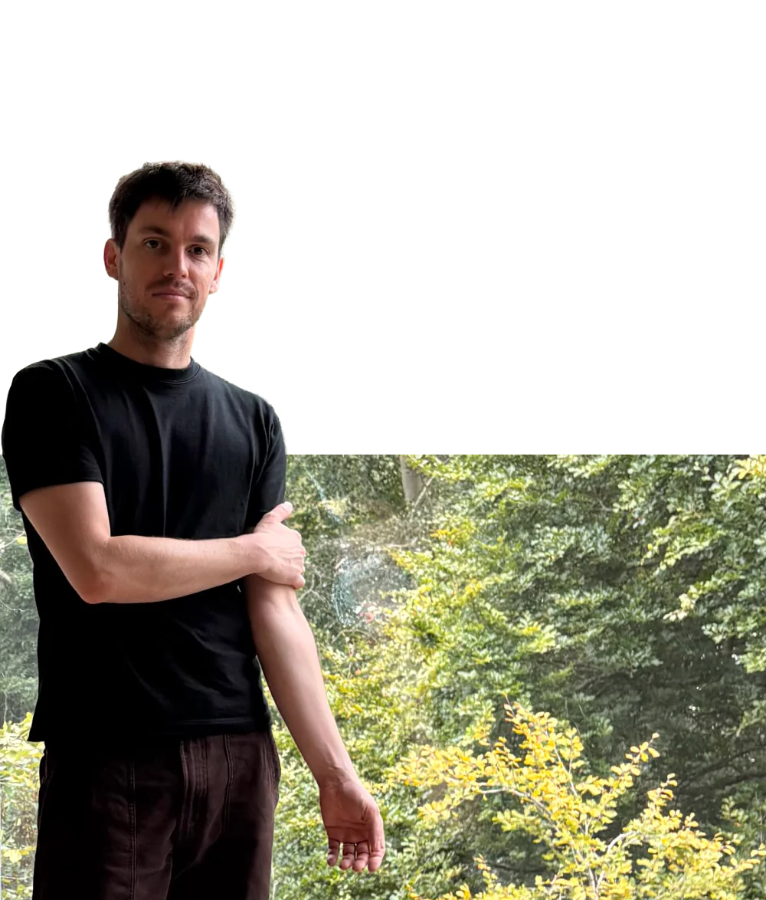

Hi! I am Brice Lebrun
I help researchers in archaeology to visualize, illustrate and communicate about their work. I have a strong background in Archaeology, with a PhD in Physics applied to Archaeology, and an even stronger interest in graphic design. I am currently seeking entry-level opportunities in graphic design. If you have any question or want to see more of my work, don't hesitate to contact me.